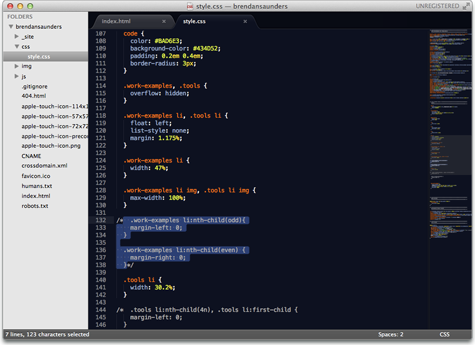
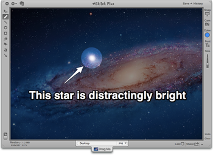
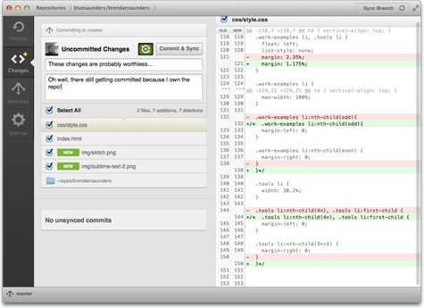
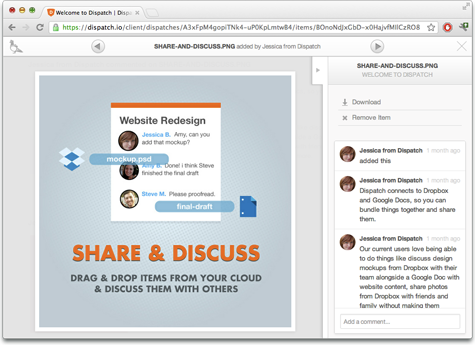
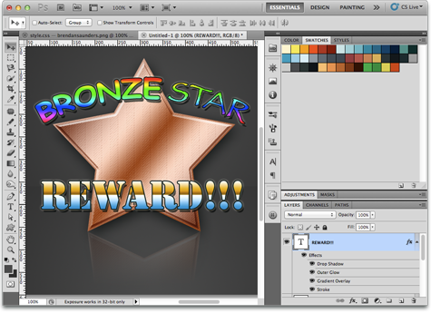
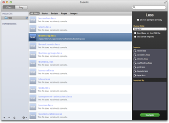

Hello, I'm Brendan Saunders.
I'm a UI Designer / Front End Coder who loves to code smart & elegant solutions to interesting problems.
I utilize HTML5 / HAML, CSS3 / SASS, JQUERY, RAILS & GIT as more than just buzzwords.
What makes me so special?
- I <3 a nice GUI, but I'm not afraid of the command line.
- Like all designers, I love a well-designed and intuitive interface, but I'm not afraid to pop over to iTerm and run a few commands when I need to. For instance, I can run a
bundle install, and can evencommit,merge,push, &pullwith the best of 'em. - I know my way around a rails app.
- I'm not a back-end developer by any stretch of the imagination, but that doesn't mean I don't know rails. I am well-versed in how a rails app is built, and I can rock some
hamlviews (.erbtoo). I even know how to use some rails built in helpers (truncate,pluralizeandimage_tagare some of my favorites. - I'm a fan of CSS pre-processing.
- Sass, or Less, doesn't matter I love them both. Variables and mixins are invaluable to helping me build beautiful CSS3 interfaces. With
.SCSS, and.LESSfiles utilizing a syntax that is a superset of CSS, I see no reason not to be using a pre-processor for even the smallest of projects that could be DRY'd up.
Some examples of my work
- Bootstrapinator
- fulcrum (marketing site)
- fulcrum (app)
- This Site
Some tools that I use:
- Sublime Text 2Where the magic happens.
- SkitchFor quick sharing of ideas.
- GitHub for MacVersion control is just smart.
- DispatchRelevant feedback is important.
- PhotoshopPixels are my friends.
- CodeKitFor pre-processing the smart way.
Where do I go from here?
I'm typically able to pick up new skills relatively quickly, and I love to constantly expand my horizons. Most recently I've been brushing up on JavaScript & CoffeeScript via Codecademy (690 points!) (core JS), and codeschool (jQuery + CoffeeScript). I've also dabbled a bit in Backbone.js, and I'm itching to build something really cool with it.